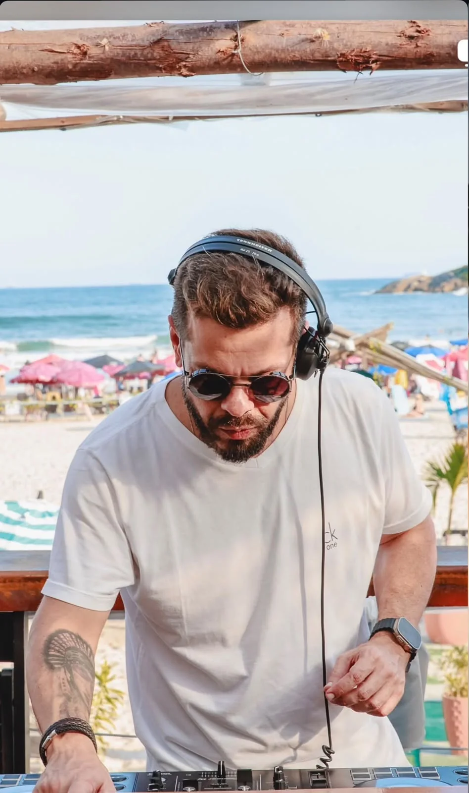

THE SOUND IS THE FEELING.
DI
PAULO.
House. Energy. Connection.
One dancefloor. Endless possibilities.
SINCE THE FIRST BEAT
IT’S NOT JUST
PLAYING MUSIC.
IT’S MAKING YOU FEEL.
About Di Paulo
From parties with friends to influential clubs and events, Di Paulo has built a career fueled by his connection with the crowd and passion for electronic music.
With 18 years on the scene and based in Santos, São Paulo, the DJ and producer moves between House, Tech House, Techno and Afro House. His sets combine groove, identity and a feel for the dancefloor — with energy at the center.
His journey includes appearances at Sirena, Mahau, Le Club, Café Hotel and La Fiesta in Punta del Este, alongside international releases and collaborations.
DISCOVER THE JOURNEYTHE DANCEFLOOR.
THE MUSIC.
From original productions to collaborations spanning the many shades of House. Discover the sound of Di Paulo.
Select a track to open it on the streaming platform.
Listen on
Spotify.
Load the official Spotify player without leaving the website.
Loading may share data with Spotify according to its privacy policy.ON THE ROAD.
A journey built in DJ booths, clubs and genuine connections through music.

VENUES & EXPERIENCES
- SIRENAMARESIAS / SP
- MAHAUSÃO PAULO / SP
- LE CLUBSÃO PAULO / SP
- CAFÉ HOTELSÃO PAULO / SP
- LA FIESTAPUNTA DEL ESTE / URUGUAI
- HIDEOUT FIZZSANTOS / SP · 2026
Selected venues and past performances. Check the official Instagram for upcoming announcements.
FOLLOW UPCOMING DATESUPCOMING SHOWS.
Explore Di Paulo’s upcoming shows, updated through the official Google Sheets calendar.
Carregando apresentações...
Dates and details may change. Please check official channels before traveling.
FOLLOW ON INSTAGRAMTHE BEST SET IS THE ONE YOU FEEL.
DI PAULO / HOUSE MUSIC & CULTUREBEYOND THE BOOTH.
From the booth to behind the scenes. Moments from a journey powered by music.
LET'S MAKE
IT LOUD.
Your next unforgettable event starts here. For clubs, festivals, private parties, weddings and corporate events, get in touch to check availability.